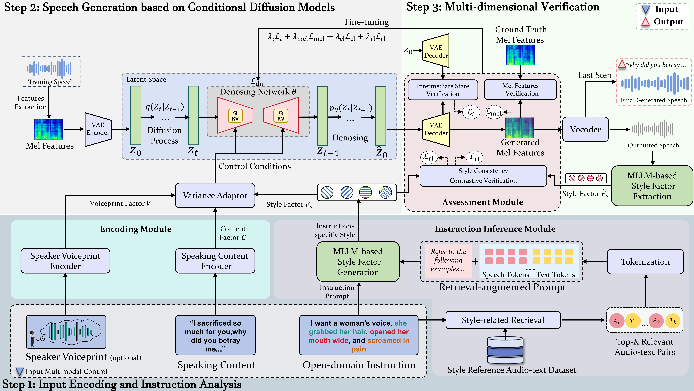

This paper focuses on generating speech with the acoustic style that meets users' needs based on their open-domain instructions. To control the style, early work mostly relies on pre-defined rules or templates. The control types and formats are fixed in a closed domain, making it hard to meet diverse needs of users. One solution is to resort to instructions in free text to guide the generation. Current work mainly studies the instructions that clearly specify the acoustic styles, such as low pitch and fast speed. However, the instructions are complex, some even vague and abstract, such as ``Generate a voice of a woman who is heartbroken due to a breakup.'' It is hard to infer this implicit style by traditional matching-based methods. To address this problem, we propose a new controllable model. It first utilizes multimodal LLMs with knowledge-augmented techniques to infer the desired speech style from the instructions. The powerful language understanding ability of LLMs can help us better elicit the implicit style factors from the instruction. By using these factors as a control condition, we design a diffusion-based generator adept at finely adjusting speech details. That offers higher flexibility to meet complex users' needs. Next, we verify the output speech from three aspects, i.e., consistency of decoding state, mel-spectrogram, and instruction style. This verified feedback can inversely optimize the generator. Extensive experiments are conducted on three popular datasets. The results show the effectiveness and good controllability of our approach.
Our method leverages multimodal LLMs to infer style factors from instructions, and a diffusion-based generator to synthesize expressive speech.
| Voice Print | Speaking Content | Close-domain Instruction | Generated Speech |
|---|---|---|---|
| Did you hear that noise just now? I think someone's outside. | Please speak in a fearful and shaky voice: | ||
| I can't believe it—we actually won the competition! | Please speak in a joyful and energetic woman voice: | ||
| Is this really happening right now? | Please speak with fast speed, and exciting tone: | ||
| I was really hoping things would turn out differently. | Please speak with falling pitch, slow speed, and disappointed tone: | ||
| That was the summer we'll never forget. | Please speak with medium pitch, slow speed: |
| Voice Print | Speaking Content | Open-domain Instruction | Generated Speech |
|---|---|---|---|
| Maybe it's time we end this relationship. | Please generate the appropriate voice based on the following scenario, All of this just makes people feel hopeless, like there's a huge weight pressing down on everyone. She said: | ||
| Wow! It's the toy car I wanted most! | Please generate a child's excited shout while opening presents on Christmas morning. | ||
| She said she was home at eight, but the neighbor saw her return at ten... | Please generate a detective analyzing a case alone in a room. | ||
| I'm sorry. I shouldn't have said that about you earlier. | Please generate a boy apologizing to a friend after an argument. | ||
| We believe that the power of technology can change the world. | Please generate an scientist expressing their views after a successful experiment. | ||
| Mom, I'm sorry. I wasn't the kind of man you hoped I'd be. | Please generate a prisoner recording an apology letter to his mother. | ||
| When the wind sweeps across the fields, it feels like memories swaying. | Please generate a poet describing their feelings in spring. | ||
| Did you plan to hide this from me all along? After everything we've built—you think I'm a joke? | Please generate a man confronting his partner after discovering a betrayal. | ||
| We laughed so much that day. But none of it's coming back. | Please generate a woman flipping through old photos alone. | ||
| Hope you stay happy always, and never worry about the small stuff. | Please generate a girl giving birthday wishes to a close friend. | ||
| Why didn't you tell me earlier? Don't you trust me? | Please generate a husband confronting his wife after discovering a hidden truth. | ||
| We planted trees today! I even gave mine a name! | Please generate a child telling parents about an after-school activity. | ||
| I can't believe it's me! Thank you, thank you all! | Please generate a boy speaking to the audience after winning a big prize on stage. | ||
| Not bad. At least I said everything I wanted to. | Please generate a young person speaking after walking out of a job interview. | ||
| You knew the truth back then, and you didn't say a word. | Please generate a man expressing dissatisfaction to a former colleague while clenching his fists. |
We present a comprehensive description of the building procedure for the Human-level Perception Spoken Speech Caption (HPSC) dataset. The pipeline involves four main stages: data preprocessing to ensure high-quality inputs, detail extraction to capture fine-grained acoustic and textual attributes, instruction generation to construct diverse open-domain prompts, and multi-round verification to guarantee reliability and consistency.
[Link to Building Procedure]
The Human-level Perception Spoken Speech Caption (HPSC) dataset will be released for public research use. It contains thousands of hours of speech paired with open-domain instructions and fine-grained annotations, designed to support controllable speech generation, acoustic style analysis, and instruction-based modeling.
[Link to Dataset]